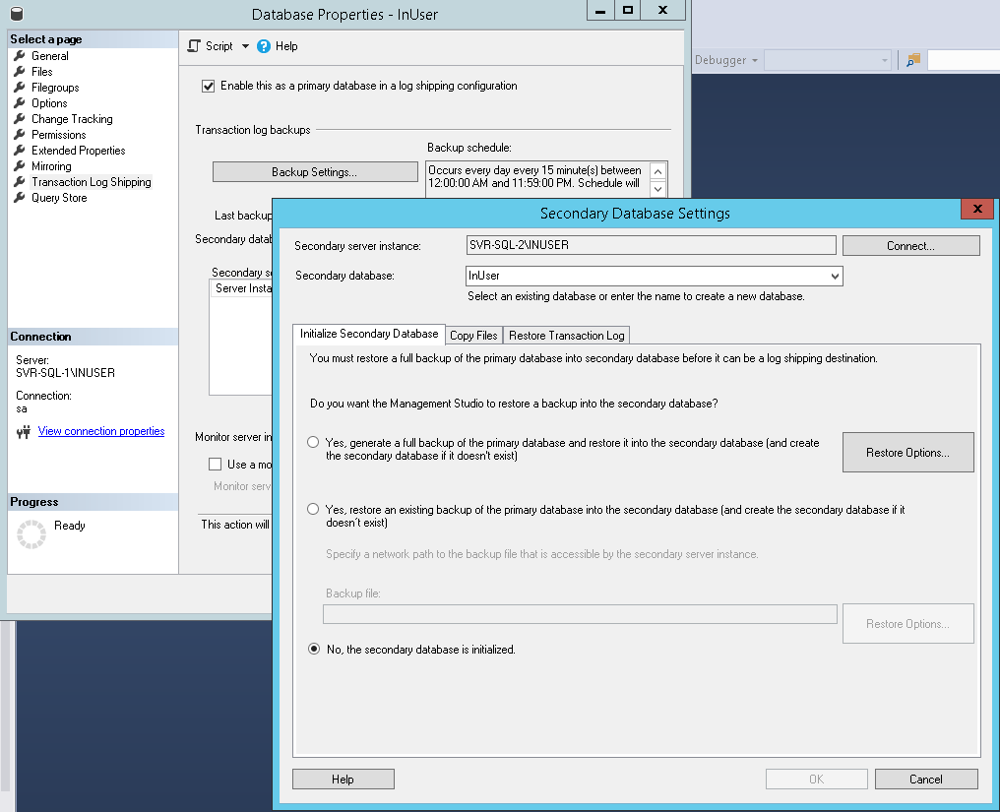

Allows you to automatically send transaction log backups from a primary database on a primary server instance to one or more secondary databases on separate secondary server instances.
Requirements:
- Database must reside on the same domain.
- Both server instance must have the same server collation settings.
- SQL server agent should be configured to start up automatically.
- Backup and Restore folders must be created separately with appropriate permissions.
- Database must be in Full or Bulk Recovery model.
- Account must have sysadmin privileges on each computer running SQL server to configure log shipping.
Transaction Undo File
- .TUF is created when performing log shipping to a server in Standby mode.
- When the database is in Standby mode, the database recovery happens when the log is restored; and this mode also creates a file on destination server with .TUF extension.
- This file contains information on all modifications performed at the time backup is taken.
- While restoring, the log backup all uncommitted transactions are recorded to the undo file with only committed transactions written to disk which enables the users to read the database.
- When we restore next transaction log backup, SQL Server will fetch all the uncommitted transactions from undo file and check with the new transaction log backup whether committed or not.
- If found to be committed the transactions will be written to disk - else it will be stored in undo file until it gets committed or rolled back.
Configuration
- Perform one Full Backup and one Transaction Log Backup on the database.
- Restore the back up files on the secondary server with NO RECOVERY option.
- Go to the primary database's properties and go to Transaction Log Shipping section. Check the "Enable this as a primary database in a log shipping configuration" option.
- Click the Backup Settings and specify the ff:
- Backup shared folder.
- Retention period and alert settings.
- Backup Job schedule.
- Compression settings.
- Set up the secondary database
- Initialize Secondary Database
- Connect to the secondary server.
- Specify the database.
- Since the database was already initialized, choose the last option.
- Copy Files
- Specify the destination for the backup files.
- Specify the retention period and alert settings.
- Specify Restore schedule.
- Restore Transaction Log
- Specify destination state.
- Specify delay and alert settings.
- Specify Backup Job schedule.
- Finish the setup.
- A job in the primary server that will back up the transaction logs.
- A job in the secondary server that will copy the transaction log back up files from the primary to the secondary server.
- A job in the secondary server that will restore the transaction log back up files.
We can set it to either NO RECOVERY or STANDBY. Both options leaves the database in a state where it can continue replaying transaction log files. With NO RECOVERY, it leaves the database not accessible. With STANDBY it leaves the database in read-only. It creates this extra standby file with an extension of bak. In previous versions of SQL Server, this used to be a TUF file. It still serves the same purpose - it contains the information on modifications made as part of any incomplete transactions at the time the backup was made.

When configuring a Log Shipping, there are three jobs that will be created.
Reverse Log Shipping
Reverse Log Shipping happens when you want the primary and the secondary database to switch places without having to re-initialize Log Shipping.
- Disable the job the backs up the log of the primary database.
- Manually run the job on the secondary database that copies the log files. This is to copy the remaining back up files.
- Manually run the job on the secondary database that restores the log files. This is to restore the remaining back up files.
- Do a last log backup on the primary database.
- After Restore the last log backup on the secondary database. This is in order for the both databases to become synchronized.
- Configure the Log Shipping as usual.
- Delete the old created jobs.
BACKUP LOG testDB TO DISK = 'L:\testDB.trn' WITH NORECOVERY
RESTORE LOG testDB FROM DISK = 'L:\testDB.trn' WITH RECOVERY
Troubleshooting
- Error on backing up transaction log - SqlLogShip.exe needs .NET Framework 3.5 installed.
- Error on restoring transaction log (Exclusive access could not be obtained because the database is in use) - No user session should be using the database.